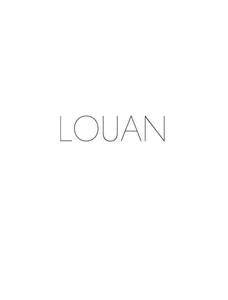

Trade Mark Journal No.2025/013 28 March 2025
UK00004172743 12 March 2025 (24,25,35)

- Class 24
- Fabric; Muslin fabric; Textile fabric; Embroidery fabric; Flannel [fabric]; Cotton fabric; Chenille fabric; Linen [fabric]; Polyester fabric; Chenile fabric; Denim fabric; Non-woven fabric; Fabric curtains; Rayon fabric; Knitted fabric; Crepe [fabric]; Woolen fabric; Jute fabric; Fabric valances; Nylon fabric; Gauze fabric; Foulard [fabric]; Curtain fabric; Woollen fabric; Moleskin [fabric]; Adhesive fabric; Cotton knitted fabric; Hemp fabric; Lingerie fabric; Jersey [fabric]; Fabrics; Fabric valences; Waterproof fabric; Silk fabric for printing patterns; Fabric linings for clothing; Woven fabrics; Ramie fabric; Cheviot fabric; Coating fabric; Elastic woven fabrics; Jersey material [fabric]; Moquettes [fabric]; Woven fabrics for cushions; Fiberglass fabric for textile use; Cotton fabrics; Linen lining fabric for shoes; Lace fabrics; Woven linen fabrics; Lining fabrics of textile in the piece; Corduroy fabrics; Fabric for footwear; Footwear (Fabric for -); Textile fabrics; Textile fabrics in the piece; Upholstery fabrics; Batik fabrics; Zephyr fabric; Non-woven fabrics; Woven silk fabrics; Esparto fabric; Silk fabrics; Shirt fabrics; Non-woven textile fabrics; Elastic fabrics for clothing; Fabric flags; Fabrics being textile piece goods for use in patchwork; Crepe fabrics; Lining fabric for footwear; Woven fabrics for furniture; Lining fabric for shoes; Wool yarn fabrics; Knitted fabrics of cotton yarn; Hemp yarn fabrics; Knitted fabrics; Fabrics being textile piece goods for use in embroidery; Knitted elastic fabrics for bodices; Knit lace fabrics; Jute fabrics; Fabric for use in the manufacture of clothing; Knitted fabrics of silk yarn; Curtain fabrics; Non-woven textile fabrics for use as interlinings; Elastic yarn mixed fabrics; Rubberized textile fabrics; Lining fabrics; Synthetic fiber fabric; Fabrics being textile piece goods for use in tapestry; Paper yarn fabrics for textile use; Kashmir fabric; Fabric bed valances; Tensioning fabrics for upholstery; Fabric cascades; Covered rubber yarn fabrics [for textile use]; Curtains made of textile fabrics; Waterproof textile fabrics; Reinforced fabrics [textile]; Silk fabrics for furniture; Non-woven fabrics for use with linings; Woven fabrics for sofas; Fabric linings for headgear; Silk fabrics for printing patterns; Knitted elastic fabrics for sportswear; Textile fabrics for lingerie; Fabrics being textile piece goods; Textile fabrics for use in the manufacture of curtains; Fabrics made from cotton, other than for insulation.
- Class 25
- Blazers; blouses; blouson jackets; blousons; bottoms [clothing]; brassieres; bridesmaid dresses; bridesmaids wear; caftans; capes; cardigans; casual clothing; casual jackets; casual shirts; casual trousers; casualwear; clothing; clothing, footwear, headgear; coats; coats for women; coats made of cotton; coats of denim; coats (top -); cocktail dresses; collared shirts; culotte skirts; culottes; dinner jackets; dresses; dresses for evening wear; dungarees; evening coats; evening dresses; evening gowns; evening suits; evening wear; formal evening wear; gowns; halter tops; heavy jackets; jackets; jackets [clothing]; jackets (stuff -) [clothing]; jumpers; jumpers [pullovers]; jumpers [sweaters]; kaftans; kimonos; knitwear; knitwear [clothing]; leather clothing; leather (clothing of -); leather coats; leather garments; outerclothing; pullovers; scarfs; shift dresses; shirts; short sets [clothing]; shorts [clothing]; short-sleeve shirts; short-sleeved or long-sleeved t-shirts; short-sleeved shirts; tank tops; tank-tops; tee-shirts; tops [clothing]; trench coats; trousers; wraps [clothing].
- Class 35
- Wholesale services in relation to clothing; Wholesale services relating to clothing; Wholesale ordering services; Retail services connected with the sale of clothing and clothing accessories; Wholesale services in relation to jewellery; Wholesale services in relation to fabrics; Mail order retail services for clothing accessories; Wholesale services in relation to footwear; Wholesale services in relation to bags; Wholesale services in relation to headgear; Retail services in relation to clothing accessories; Mail order retail services for clothing; Mail order retail services connected with clothing accessories; Wholesale services relating to fake furs; Wholesale services relating to automobile accessories; Online retail store services in relation to clothing; Retail services in relation to fabrics.
Yi Qin